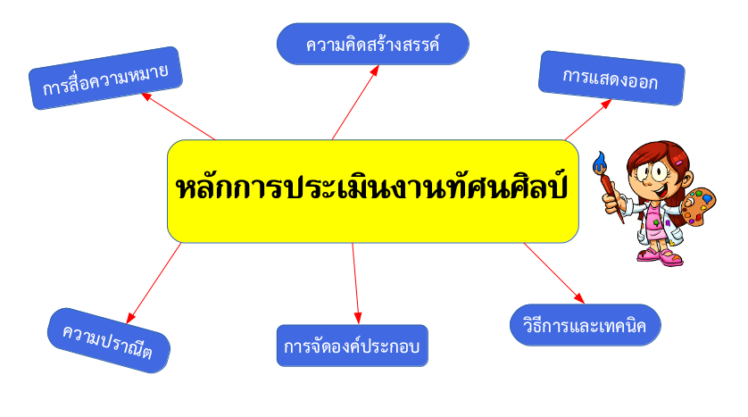
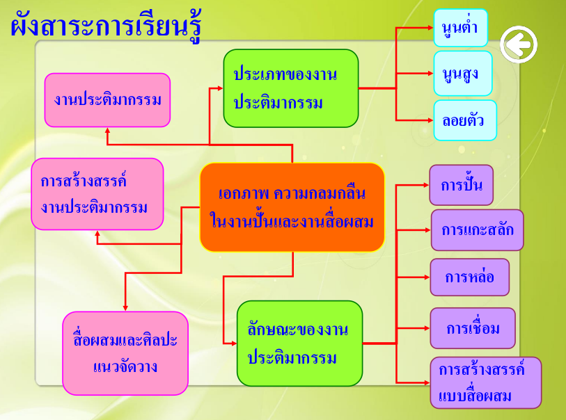

ม.1 วิชา ศ21103 ทัศนศิลป์ 2
ภาระงาน ปลายภาค
1.ให้นักเรียนสรุปเนื้อหา "หลักการประเมินงานทัศน์ศิลป์" ในรูปแบบ Mind Map และตกแต่งให้สวยงาม

2.ให้นักเรียนสรุปเนื้อหา "หลักการประเมินงานทัศน์ศิลป์" และตกแต่งให้สวยงาม
หลักเกณฑ์การพิจารณาเพื่อประเมินผลงานทัศนศิลป์
- การสื่อความหมาย ต้องมีการสื่อความหมาย หรือสื่อความคิดและข้อมูลได้ชัดเจนสอดคล้องกับหัวเรื่องที่กำหนด
- ความคิดริเริ่มสร้างสรรค์ สร้างสรรค์ในผลงานทัศนศิลป์ที่แสดงถึงความก้าวหน้า ความแปลกใหม่ของลักษณะรูปแบบ และเนื้อหาสาระใหม่ที่ดีกว่าของเดิมที่มีอยู่แล้ว ไม่ใช่เป็นผลงานที่คัดลอกเลียนแบบจากผู้อื่น
- การแสดงออก ไม่ลอกเลียนแบบผลงานของผู้อื่น รู้จักใช้ทักษะในการนำวัสดุต่างๆ มาสร้างสรรค์ผลงาน
- วิธีการและเทคนิค ความเป็นอิสระมีไหวพริบในการดัดแปลง สามารถปรับปรุงแก้ไขผลงานจนได้รูปแบบใหม่ๆ หรือได้เทคนิคใหม่
- การจัดองค์ประกอบ ผลงานทัศนศิลป์ที่สร้างสรรค์ออกมาจะต้องมีองค์ประกอบที่มีความเป็นเอกภาพกลมกลืน และสมดุล
- ความประณีต งานศิลปะที่ดีและสมบูรณ์แบบจะต้องแสดงออกถึงความสะอาด เรียบร้อย มีความประณีต เพราะเป็นการสะท้อน ให้เห็นถึงความตั้งใจ ความมุ่งมั่น ตลอดจนความมีสุนทรียภาพของผู้สร้างงาน
ภาระงาน กลางภาค
1. ให้นักเรียนวาดรูปตามจินตนาการ
2. ให้นักเรียนสรุปเนื้อหาเรื่อง เอกภาพ ความกลมกลืนในงานปั้นและงานสื่อผสม ในรูปแบบของ Mind Map

3. ให้นักเรียนสรุปเนื้อหาเรื่อง เอกภาพ ความกลมกลืนในงานปั้นและงานสื่อผสม ในรูปแบบของ Mind Map

4. ให้นักเรียนลอกรูปโลโก้ต่อไปนี้ลงกระดาษ
5. ให้นักเรียนออกแบบตราสัญลักษณ์ผลิตภัณฑ์ 1 ชิ้น พร้อมเขียนคำอธิบาย